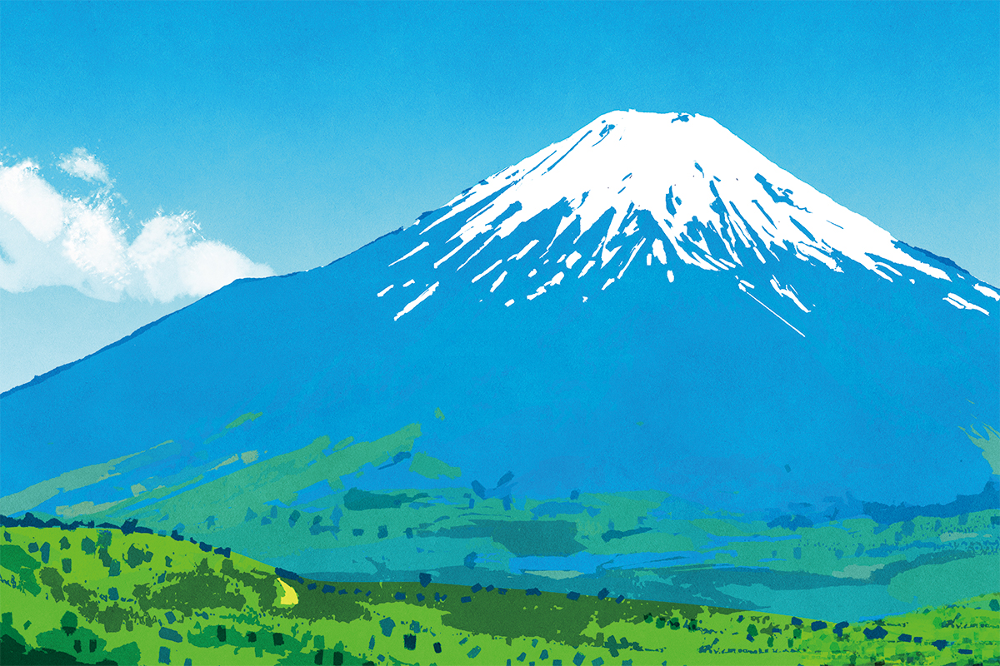
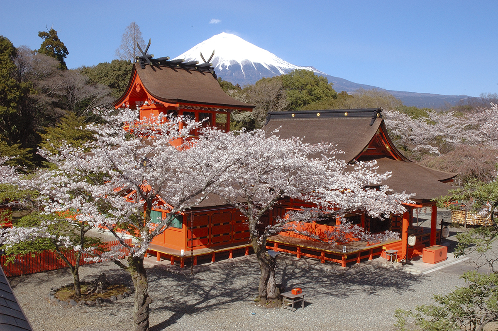
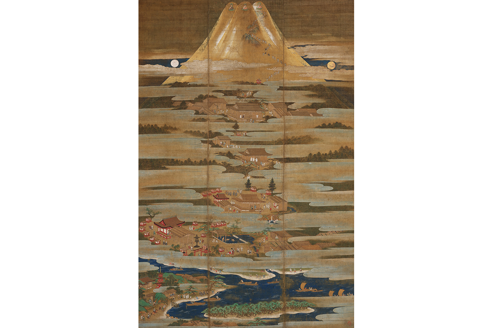
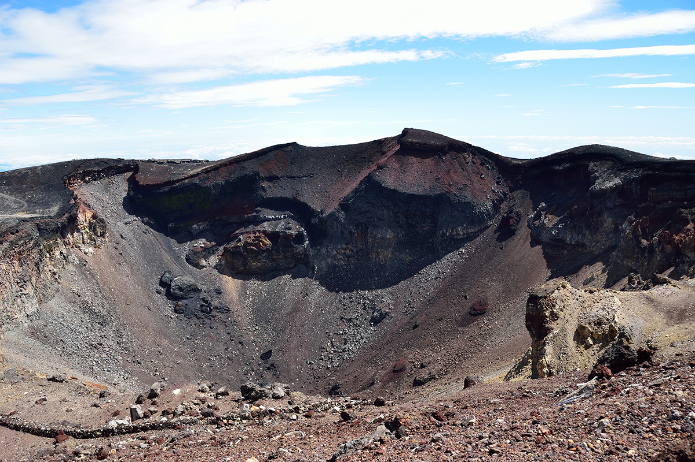

Префектура Яманаси · Фудзи · священные горы
Фудзи как священная гора: тысяча лет паломничества к вершине Японии

Фудзи, Татэяма и Хакусан называют тремя священными горами Японии. Паломники поднимались на них задолго до того, как появилось слово «треккинг», и Фудзи среди них главная: самая высокая гора страны и сердце японского поклонения горам.
Три горы
Когда появились «три священные горы»
Фудзи, Татэяма и Хакусан издавна считаются самыми почитаемыми горами Японии. В эпоху Эдо их называли просто «тремя горами», и были паломники, которые обходили все три подряд: такое паломничество называлось «сандзэндзё». Но выражения «три священные горы» в старых текстах нет, и, судя по всему, оно родилось только в новое время.
Одно из первых упоминаний встречается в книге о божестве горы Татэяма 1907 года, где автор называет три горы «тремя священными горами Японской империи». Широко выражение разошлось в эпоху Сёва. Местный автор истолковал строку народной песни «Эттю овара-буси» («в Эттю Татэяма, в Кага Хакусан, в Суруга Фудзи, лучше их нет в трёх странах») как перечень трёх священных гор и на этом построил рассказ о значении Татэямы.

Сборник, в котором напечатан его очерк, вышел по особому поводу. В 1924 году регент, будущий император Сёва (1901–1989), посетил префектуру Тояма, а на следующий год на новогоднем поэтическом собрании при дворе прочитал стихотворение о Татэяме: её мужественный облик в небе должен служить образцом для всего государства. Префектура заказала композитору музыку к этим стихам, а 2 мая 1927 года текст высекли на огромном камне у самой вершины Татэямы. Святилище на вершине раздавало верующим амулеты с надписью «Восхождение на Татэяму, одну из трёх священных гор Японии». Так к «лучшей в трёх странах» Фудзи присоединили Татэяму и Хакусан, и выражение постепенно разошлось из провинции Эттю по стране.
Вера
Гора, которая дарит и пугает
Высота Фудзи 3776 метров, это высочайшая вершина Японии. Одинокий снежный конус выглядит симметричным с любой стороны, и красота горы веками притягивала людей. В старину её название записывали и иероглифами «бессмертие» или «счастье и милосердие», а ещё называли горой Хорай, обителью бессмертных из китайских легенд: даосские представления о бессмертии здесь чувствуются очень сильно.
На самой Фудзи нет рек. Снег уходит в толщу горы и выходит у подножия обильными родниками, от которых живут окрестные деревни. Источники и водоёмы вокруг горы почитают как святыни: пруд Вакутама у южного подножия, водопад Сираито на западе, родники Осино Хаккай на северо-востоке и Пять озёр Фудзи на севере.
При этом Фудзи всегда была действующим вулканом, и её извержения наводили ужас. За главным святилищем у южного подъёма стоит горное святилище Ямамия: оно находится там, где остановился поток лавы, и, по всей видимости, здесь молились о том, чтобы извержения прекратились. Ни молельного зала, ни главного здания там нет. Так же устроено и святилище Кавагути Асама у северного подъёма: его, по преданию, поставили там, где остановилась лава после большого извержения 864 года. Слово «асама» и означает «вулкан». Двойственность Фудзи, которая одновременно дарит жизнь и угрожает ей, видна здесь особенно ясно.

Знаменитое стихотворение поэта VIII века Акахито Ямабэ из антологии «Манъёсю» рассказывает, как, выйдя к берегу бухты Таго, он увидел вершину Фудзи, сплошь белую от снега. В те времена дымящуюся гору боялись и почитали издали. Вулканическая активность VIII века продолжалась примерно до XII века, и настоящие восхождения начались лишь после этого. По хронике «Хонтё сэйки» монах Мацудай-сёнин поднялся на вершину в 1149 году, поставил там изображение будды Дайнити и оставил сутры. В 1930 году на вершине Мисимагатакэ нашли свитки сутр, которые, возможно, относятся к тому времени. Есть и легенды: будто принц Сётоку (574–622), один из первых покровителей буддизма в Японии, поднялся на Фудзи верхом на чёрном коне, а отшельник Эн-но гёдзя (VII век), легендарный основатель горной аскезы сюгэндо, летал сюда по воздуху с полуострова Идзу.
Божеством горы считается женщина. У восточного и северо-западного подножия нашли древние статуи богинь. По средневековым сказаниям, на вершину поднялась Кагуя-химэ, лунная дева из старинной повести, стала бессмертной и превратилась в божество горы. В Средние века синтоизм и буддизм были переплетены: истинной сущностью горы считали будду Дайнити, а его воплощением бога Фудзи Сэнгэн Дайбосацу. Вершину представляли троицей будд (Якуси, Амида и Дайнити), край кратера восьмилепестковым лотосом, а всё вместе, с Дайнити в центре, девятью буддами на восьми лепестках. С раннего Нового времени и до наших дней божеством Фудзи почитают богиню Конохана-но Сакуя-химэ.
Паломники
От горных аскетов до Фудзи-ко
Центром горной аскезы на Фудзи была деревня Мураяма у южного подножия. Монаха Мацудай-сёнина там почитали как основателя, а три местных монастырских подворья вместе называли храмом Кобо-дзи. С XIV века отсюда уходили в «аскезу вершины Фудзи»: месяц подъёма к кратеру и обхода подножия. Именно этот путь от Мураямы показан на «Мандале паломничества» XVI века.
Подъёмов на гору было шесть: два на юге, у Мураямы и Омии, по одному на юго-востоке и на востоке и два на севере, у Ёсиды и Кавагути. У начала каждого стояло святилище Сэнгэн. В эпоху Эдо в столице и вокруг неё сложились братства паломников Фудзи-ко. Они шли к горе по тракту Накасэндо, и в Ёсиде выросло множество паломнических постоялых дворов. Хозяева этих дворов, оси, молились за паломников, давали им кров и водили на гору.
Основателем движения считается аскет Какугё (1541–1646). Взрывной рост начался при его последователе в шестом поколении, Дзикигё Мироку (1671–1733), который проповедовал равенство мужчин и женщин и усердие в любом ремесле и призывал подниматься на Фудзи. Впервые Фудзи-ко упоминаются в документах 1795 года, а к 1805 году в Эдо говорили уже о «восьмистах восьми братствах». Главной святыней братства был свиток-оберег о-минуки, а на собраниях жгли благовония, сложенные в форме Фудзи. В самом Эдо насыпали фудзидзука, маленькие копии горы. Каждый год, 1-го числа шестого месяца по старому календарю, на них поднимались женщины, дети и старики, и считалось, что это приносит такую же благодать, как настоящее восхождение.
Братства Фудзи-ко появились и в других краях: в Канто, Токай и на полуострове Исэ-Сима. После реставрации Мэйдзи синтоизм и буддизм разделили, и обряды на горе перешли к святилищам Сэнгэн. По всей стране их 1300, а главное из них Фудзисан Хонгу Сэнгэн-тайся у южного подъёма. В 2013 году Фудзи вошла в список Всемирного наследия ЮНЕСКО как «объект поклонения и источник вдохновения в искусстве», и на гору приходит множество людей.
Маршрут
Как подниматься
Тем, кто хочет пройти по следам паломников, рекомендуем тропу Ёсида с первой станции. Путь начинается у Умагаэси, где когда-то паломники оставляли лошадей, идёт мимо старого святилища Фудзи Омуро Сэнгэн на второй станции, через пятую и восьмую станции к кратеру на вершине. С 2024 года на пятой станции тропы Ёсида берут плату за проход и ограничивают число восходителей в день.

Фото: Кэнто Иида (иллюстрация).